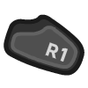

Targeting¶
Note: This page assumes that you have the left-click and right-click behaviors in Myth set up as described on the Controls page.
Main Controls¶
Attack¶
to click on a hostile unit will designate it as an attack target for your currently selected units.
Ranged units in your selection will all attack the targeted unit until it is dead. Melee units on the other hand will individually choose to attack nearby units of the same type as the targeted unit.
In either case, once a given unit’s target is dead, that unit will begin attacking another hostile unit if one is nearby.
Attack Ground¶
 to click a spot on the ground will cause your selected units to attack that spot. (This is generally only useful if your selected units will use a ranged attack.)
Special Ability¶
Some units have an ability or alternate attack that can be activated.

activates the selected units’ special ability, if any.
In many cases, you will then need to pick a target using an attack or ground-attack. Note that special abilities which can affect friendly units (like the journeyman’s “heal”) will allow you to target friendlies with your subsequent attack click, which is normally not possible.
Other Controls¶
Pick Up¶
Melee Focus¶

Archer Punch¶
In rare cases you may want an archer unit to “stand and fight” rather than backing away to get clearance to use its ranged attack.